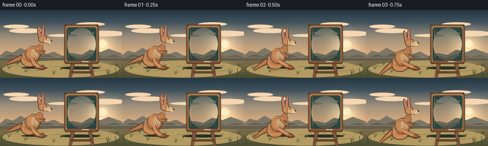
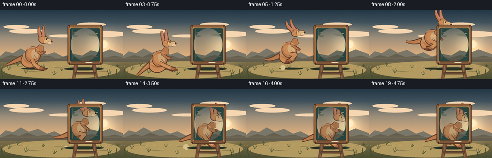
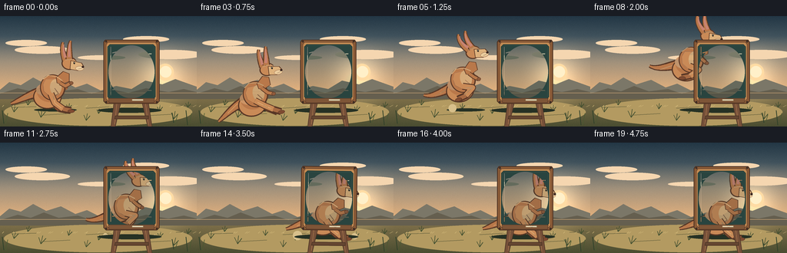
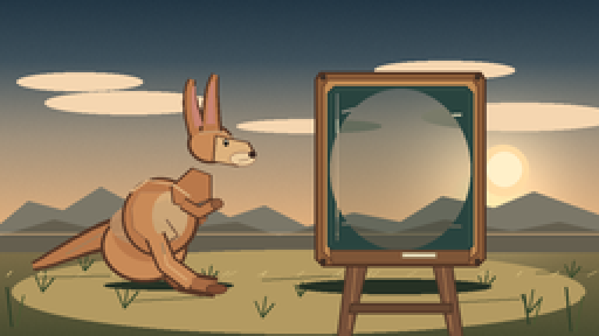
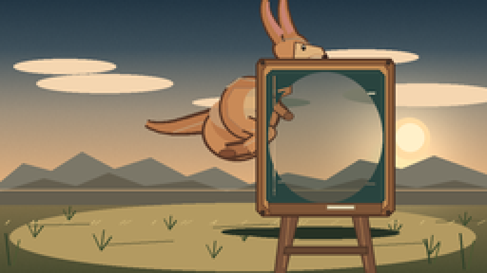
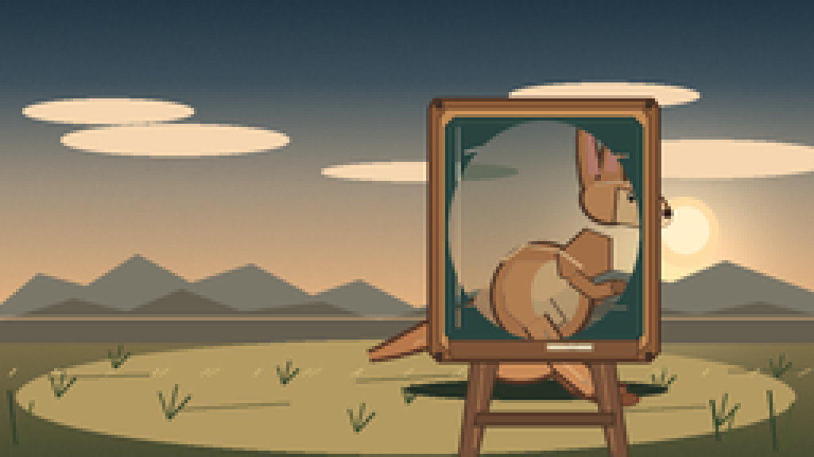
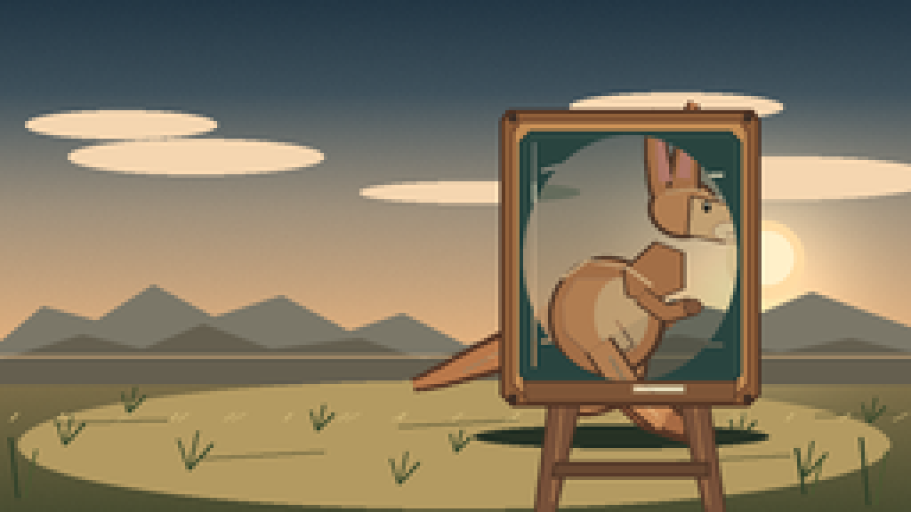

CODING AGENTS AS PIXEL WORLD MODELS
traex/DeepSeek-V4.1-Flash · dynamic_spatial_relationship_0034
点击播放 · 原生 RGB 像素
逐轮保存的候选
回放视频、检查图与代码变化。
每份候选均可单独播放。实际图片检查记录在下方工具轨迹中。
候选 01播放与检查图
点击播放 · 原生 RGB 像素

展开代码变化
--- 上一保存版本
+++ 本次保存版本
@@ -0,0 +1,496 @@
+from __future__ import annotations
+
+import math
+from pathlib import Path
+
+import numpy as np
+from PIL import Image, ImageDraw, ImageFilter
+
+import artifact_io
+
+
+ROOT = Path(__file__).resolve().parent
+WIDTH = 256
+HEIGHT = 144
+FRAMES = 20
+FPS = 4.0
+SS = 4
+
+
+def sc(value: float) -> int:
+ return int(round(value * SS))
+
+
+def scaled_points(points):
+ return [(sc(x), sc(y)) for x, y in points]
+
+
+def rgba(hex_color: str, alpha: int = 255):
+ hex_color = hex_color.lstrip("#")
+ return tuple(int(hex_color[i : i + 2], 16) for i in (0, 2, 4)) + (alpha,)
+
+
+def mix(a, b, t: float):
+ return tuple(int(round(a[i] + (b[i] - a[i]) * t)) for i in range(4))
+
+
+def cubic_bezier(p0, p1, p2, p3, steps=28):
+ points = []
+ for i in range(steps + 1):
+ t = i / steps
+ u = 1.0 - t
+ x = u**3 * p0[0] + 3 * u**2 * t * p1[0] + 3 * u * t**2 * p2[0] + t**3 * p3[0]
+ y = u**3 * p0[1] + 3 * u**2 * t * p1[1] + 3 * u * t**2 * p2[1] + t**3 * p3[1]
+ points.append((x, y))
+ return points
+
+
+def tapered_stroke_polygon(points, start_width: float, end_width: float):
+ left = []
+ right = []
+ count = len(points)
+ for i, (x, y) in enumerate(points):
+ if i == 0:
+ tx, ty = points[1][0] - x, points[1][1] - y
+ elif i == count - 1:
+ tx, ty = x - points[i - 1][0], y - points[i - 1][1]
+ else:
+ tx = points[i + 1][0] - points[i - 1][0]
+ ty = points[i + 1][1] - points[i - 1][1]
+ length = max(1e-5, math.hypot(tx, ty))
+ nx, ny = -ty / length, tx / length
+ width = start_width + (end_width - start_width) * (i / max(1, count - 1))
+ left.append((x + nx * width * 0.5, y + ny * width * 0.5))
+ right.append((x - nx * width * 0.5, y - ny * width * 0.5))
+ return left + right[::-1]
+
+
+def rounded_polygon(draw, points, fill, outline=None, width=1):
+ draw.polygon(scaled_points(points), fill=fill)
+ if outline is not None:
+ draw.line(scaled_points(points + [points[0]]), fill=outline, width=width, joint="curve")
+
+
+def ellipse(draw, box, fill, outline=None, width=1):
+ draw.ellipse(tuple(sc(v) for v in box), fill=fill, outline=outline, width=width)
+
+
+def line(draw, points, fill, width):
+ draw.line(scaled_points(points), fill=fill, width=width, joint="curve")
+
+
+def make_background():
+ h, w = HEIGHT * SS, WIDTH * SS
+ yy, xx = np.mgrid[0:h, 0:w].astype(np.float32)
+ y = yy / max(1, h - 1)
+
+ top = np.array([35, 55, 69], dtype=np.float32)
+ middle = np.array([101, 116, 121], dtype=np.float32)
+ horizon = np.array([229, 178, 126], dtype=np.float32)
+ ground_far = np.array([137, 118, 78], dtype=np.float32)
+ ground_near = np.array([74, 77, 49], dtype=np.float32)
+
+ image = np.zeros((h, w, 3), dtype=np.float32)
+ horizon_y = 0.685
+ upper_t = np.clip(y / horizon_y, 0, 1)[..., None]
+ upper_t2 = np.clip(upper_t * 1.65, 0, 1)
+ image[:] = top * (1 - upper_t2) + middle * upper_t2
+ glow_t = np.clip((y - 0.18) / (horizon_y - 0.18), 0, 1)[..., None]
+ image = image * (1 - glow_t) + horizon * glow_t
+
+ ground_mask = y >= horizon_y
+ ground_t = np.clip((y - horizon_y) / (1 - horizon_y), 0, 1)[..., None]
+ ground = ground_far * (1 - ground_t) + ground_near * ground_t
+ image = np.where(ground_mask[..., None], ground, image)
+
+ sun_x, sun_y = 0.82 * w, 0.54 * h
+ distance = np.sqrt((xx - sun_x) ** 2 + (yy - sun_y) ** 2) / (0.17 * w)
+ glow = np.exp(-(distance**2) * 2.2)[..., None]
+ sun_color = np.array([255, 223, 165], dtype=np.float32)
+ image = np.clip(image + glow * sun_color * 0.32, 0, 255)
+
+ rng = np.random.default_rng(17)
+ noise = rng.normal(0, 2.4, (h, w, 1))
+ image = np.clip(image + noise, 0, 255)
+ return Image.fromarray(image.astype(np.uint8), "RGB").convert("RGBA")
+
+
+def draw_sky_details(image):
+ draw = ImageDraw.Draw(image, "RGBA")
+ # Soft clouds and a low sun, kept behind the action.
+ for x, y, rx, ry, alpha in [
+ (34, 35, 27, 4, 52),
+ (55, 44, 36, 5, 38),
+ (190, 30, 30, 4, 44),
+ (222, 50, 42, 6, 35),
+ (132, 54, 31, 3, 24),
+ ]:
+ ellipse(draw, (x - rx, y - ry, x + rx, y + ry), rgba("#f5d6b0", alpha))
+ ellipse(draw, (204, 62, 226, 84), rgba("#ffdca4", 185))
+ ellipse(draw, (208, 65, 223, 80), rgba("#fff0c9", 220))
+
+ # Distant ranges with atmospheric haze.
+ rounded_polygon(
+ draw,
+ [(0, 96), (12, 86), (27, 90), (43, 80), (60, 89), (79, 83), (98, 93),
+ (113, 88), (131, 97), (151, 91), (171, 95), (189, 84), (211, 89),
+ (228, 82), (256, 92), (256, 102), (0, 102)],
+ rgba("#7b7768", 170),
+ )
+ rounded_polygon(
+ draw,
+ [(0, 101), (23, 94), (40, 98), (57, 91), (76, 98), (101, 95),
+ (119, 101), (143, 95), (167, 100), (190, 94), (219, 99), (239, 95),
+ (256, 99), (256, 108), (0, 108)],
+ rgba("#655f4f", 170),
+ )
+ line(draw, [(0, 100), (256, 100)], rgba("#e0b47f", 55), sc(0.55))
+
+
+def draw_ground_details(image, frame_index):
+ draw = ImageDraw.Draw(image, "RGBA")
+ # Warm path and dry-grass texture create depth without competing with the actors.
+ ellipse(draw, (5, 107, 250, 143), rgba("#b39a61", 35))
+ for x0, y0, x1, y1, shade in [
+ (15, 119, 47, 118, 62),
+ (56, 129, 91, 127, 55),
+ (112, 120, 145, 118, 48),
+ (186, 130, 222, 128, 54),
+ (229, 117, 252, 116, 48),
+ ]:
+ line(draw, [(x0, y0), (x1, y1)], rgba("#5e5b39", shade), sc(0.8))
+
+ sway = 0.8 * math.sin(frame_index * 0.72)
+ tufts = [
+ (18, 125, 1.0), (36, 116, 0.8), (53, 132, 1.2), (89, 121, 0.8),
+ (112, 136, 1.0), (128, 127, 0.7), (207, 124, 0.9), (226, 134, 1.1),
+ (244, 119, 0.8),
+ ]
+ for x, y, size in tufts:
+ color = rgba("#3f4d2f", 150)
+ line(draw, [(x, y), (x - 3 * size + sway, y - 7 * size)], color, sc(0.75))
+ line(draw, [(x, y), (x + 1.5 * size + sway, y - 9 * size)], color, sc(0.7))
+ line(draw, [(x, y), (x + 5 * size + sway, y - 6 * size)], color, sc(0.65))
+
+ for i in range(26):
+ x = (i * 47 + 13) % 250 + 3
+ y = 111 + ((i * 29 + 7) % 29)
+ alpha = 38 + (i % 4) * 9
+ line(draw, [(x, y), (x + 2 + (i % 3), y - 2)], rgba("#d4bb7b", alpha), sc(0.5))
+
+
+def draw_kangaroo_shadow(image, x, body_y, frame_index):
+ draw = ImageDraw.Draw(image, "RGBA")
+ height = max(0.0, 95.0 - body_y)
+ width = 28.0 - min(13.0, height * 0.25)
+ alpha = int(70 - min(34, height * 0.55))
+ ellipse(draw, (x - width, 120.3, x + width, 124.2), rgba("#263124", alpha))
+ # Takeoff and landing dust puffs.
+ puffs = []
+ if 3 <= frame_index <= 6:
+ age = frame_index - 3
+ puffs.append((81 - age * 2.2, 120, 3 + age * 1.1, max(10, 45 - age * 7)))
+ if 11 <= frame_index <= 15:
+ age = frame_index - 11
+ puffs.extend([
+ (137 - age * 2.0, 121, 3 + age, max(8, 38 - age * 6)),
+ (201 + age * 1.4, 122, 2 + age * 0.7, max(7, 30 - age * 5)),
+ ])
+ for px, py, radius, alpha_value in puffs:
+ ellipse(draw, (px - radius, py - radius, px + radius, py + radius),
+ rgba("#d8c08b", alpha_value))
+
+
+def board_layer(wobble_degrees: float):
+ layer_w, layer_h = 96, 128
+ layer = Image.new("RGBA", (layer_w * SS, layer_h * SS), (0, 0, 0, 0))
+ draw = ImageDraw.Draw(layer, "RGBA")
+
+ # A-frame legs, cross brace and feet.
+ leg_shadow = rgba("#4c3525", 230)
+ leg_fill = rgba("#765039", 255)
+ leg_light = rgba("#a5744b", 210)
+ rounded_polygon(draw, [(24, 72), (18, 119), (23, 121), (33, 77)], leg_fill, leg_shadow, sc(0.8))
+ rounded_polygon(draw, [(65, 73), (72, 119), (67, 121), (57, 78)], leg_fill, leg_shadow, sc(0.8))
+ line(draw, [(27, 77), (23, 114)], leg_light, sc(0.8))
+ line(draw, [(62, 78), (67, 115)], leg_light, sc(0.7))
+ rounded_polygon(draw, [(24, 103), (67, 103), (67, 107), (23, 107)],
+ rgba("#654631", 255), rgba("#4b3325", 255), sc(0.7))
+ ellipse(draw, (12, 118, 30, 123), rgba("#4a3427", 255))
+ ellipse(draw, (61, 118, 79, 123), rgba("#4a3427", 255))
+
+ # Timber frame with a shadowed inner lip.
+ rounded_polygon(draw, [(11, 4), (79, 4), (81, 7), (81, 84), (78, 87),
+ (12, 87), (9, 84), (9, 7)],
+ rgba("#8a5b37", 255), rgba("#4b3022", 255), sc(0.9))
+ rounded_polygon(draw, [(14, 7), (76, 7), (78, 10), (78, 81), (75, 84),
+ (15, 84), (12, 81), (12, 10)],
+ rgba("#c08a53", 255), rgba("#71472e", 255), sc(0.65))
+ rounded_polygon(draw, [(17, 10), (73, 10), (76, 13), (76, 78), (73, 81),
+ (17, 81), (14, 78), (14, 13)],
+ rgba("#2f4a43", 255), rgba("#243b37", 255), sc(0.8))
+
+ # Chalkboard surface: faint erased strokes and a soft vignette.
+ draw.rectangle((sc(16), sc(12), sc(74), sc(79)), fill=rgba("#29443f", 255))
+ for y, alpha, curve in [(21, 20, -5), (31, 17, 6), (44, 14, -3), (58, 13, 4), (69, 11, -2)]:
+ points = [(20, y), (38, y + curve), (57, y - curve * 0.4), (71, y + 1)]
+ line(draw, points, rgba("#a9c0aa", alpha), sc(1.15))
+ ellipse(draw, (15, 11, 75, 80), rgba("#102d2b", 35), width=sc(1.0))
+ line(draw, [(18, 13), (18, 76)], rgba("#d5e0c7", 18), sc(0.65))
+
+ # Chalk ledge, chalk stick and corner pins.
+ rounded_polygon(draw, [(15, 80), (75, 80), (74, 86), (16, 86)],
+ rgba("#7e5537", 255), rgba("#4f3425", 255), sc(0.6))
+ rounded_polygon(draw, [(46, 81.2), (60, 81.2), (60, 83.2), (46, 83.2)],
+ rgba("#e8ddbd", 235), rgba("#a79875", 170), sc(0.4))
+ for x, y in [(12, 6), (78, 6), (12, 85), (78, 85)]:
+ ellipse(draw, (x - 1.2, y - 1.2, x + 1.2, y + 1.2), rgba("#3d2c22", 240))
+
+ if abs(wobble_degrees) > 0.02:
+ layer = layer.rotate(
+ wobble_degrees,
+ resample=Image.Resampling.BICUBIC,
+ center=(sc(45.5), sc(119)),
+ )
+ return layer, layer_w, layer_h
+
+
+def draw_board_shadow(image):
+ draw = ImageDraw.Draw(image, "RGBA")
+ ellipse(draw, (127, 119.5, 210, 126), rgba("#263124", 60))
+
+
+def draw_kangaroo(body_x: float, body_y: float, rotation: float, pose: str, phase: float):
+ layer_w = layer_h = 150
+ origin = 75
+ layer = Image.new("RGBA", (layer_w * SS, layer_h * SS), (0, 0, 0, 0))
+ draw = ImageDraw.Draw(layer, "RGBA")
+
+ def L(points):
+ return [(origin + x, origin + y) for x, y in points]
+
+ def E(box, fill, outline=None, width=1):
+ ellipse(draw, (origin + box[0], origin + box[1], origin + box[2], origin + box[3]),
+ fill, outline, width)
+
+ def P(points, fill, outline=None, width=1):
+ rounded_polygon(draw, L(points), fill, outline, width)
+
+ def LN(points, fill, width):
+ line(draw, L(points), fill, width)
+
+ outline = rgba("#583726", 255)
+ dark_fur = rgba("#8d5737", 255)
+ mid_fur = rgba("#b9784a", 255)
+ warm_fur = rgba("#c98a57", 255)
+ light_fur = rgba("#ddb17c", 255)
+ cream = rgba("#ebcc9d", 255)
+ inner_ear = rgba("#c88372", 255)
+
+ if pose == "idle":
+ tail_tip_y = 20 + 1.2 * math.sin(phase * math.pi)
+ near_knee, near_ankle, near_toe = (-1, 19), (10, 27), (20, 29)
+ far_knee, far_ankle, far_toe = (-5, 18), (5, 27), (15, 29)
+ elbow, hand = (13, -3), (20, -7)
+ head_y = -31
+ lean_ear = 0.0
+ elif pose == "crouch":
+ tail_tip_y = 24
+ near_knee, near_ankle, near_toe = (5, 16), (15, 23), (24, 28)
+ far_knee, far_ankle, far_toe = (1, 15), (10, 22), (19, 28)
+ elbow, hand = (12, 0), (19, 3)
+ head_y = -28
+ lean_ear = 2.5
+ elif pose == "launch":
+ tail_tip_y = 8
+ near_knee, near_ankle, near_toe = (6, 14), (16, 21), (24, 23)
+ far_knee, far_ankle, far_toe = (1, 14), (10, 21), (18, 23)
+ elbow, hand = (13, -1), (19, 2)
+ head_y = -31
+ lean_ear = -2.0
+ elif pose == "flight":
+ tail_tip_y = 3 + 4 * math.sin(phase * math.pi)
+ near_knee, near_ankle, near_toe = (6, 12), (-5, 20), (-16, 22)
+ far_knee, far_ankle, far_toe = (1, 12), (-9, 19), (-19, 21)
+ elbow, hand = (11, -1), (16, 3)
+ head_y = -31
+ lean_ear = -5.0
+ else: # landing / settle
+ tail_tip_y = 18
+ near_knee, near_ankle, near_toe = (3, 20), (13, 28), (22, 31)
+ far_knee, far_ankle, far_toe = (-1, 19), (8, 27), (17, 30)
+ elbow, hand = (13, -2), (20, -4)
+ head_y = -30
+ lean_ear = 1.0
+
+ # Long tail, outlined and then filled with a tapered stroke.
+ tail_curve = cubic_bezier(
+ (-15, 4),
+ (-33, 7),
+ (-48, 10 + tail_tip_y * 0.35),
+ (-58, tail_tip_y),
+ )
+ tail_outline = tapered_stroke_polygon(tail_curve, 15, 4)
+ P([(x, y) for x, y in tail_outline], outline)
+ tail_fill = tapered_stroke_polygon(tail_curve, 11, 1.7)
+ P([(x, y) for x, y in tail_fill], mid_fur)
+ LN([(-18, 4), (-30, 7), (-44, 10 + tail_tip_y * 0.25)],
+ rgba("#d39762", 120), sc(1.0))
+
+ # Far limbs sit slightly darker and behind the body.
+ LN([(-5, 7), far_knee, far_ankle, far_toe], outline, sc(8.0))
+ LN([(-5, 7), far_knee, far_ankle], dark_fur, sc(6.2))
+ LN([far_ankle, far_toe], rgba("#82502f", 255), sc(4.3))
+ E((-11, -7, 2, 5), rgba("#9b613d", 255), outline, sc(0.75))
+ LN([(4, -8), (11, -3), (15, 1)], outline, sc(4.8))
+ LN([(4, -8), (11, -3), (15, 1)], rgba("#9b613d", 255), sc(3.4))
+
+ # Tail root and powerful haunch.
+ E((-29, -4, 8, 27), outline)
+ E((-27.5, -3, 6.8, 25.4), warm_fur)
+ E((-24, -9, 9, 18), mid_fur)
+ E((-25, -7, 4, 11), rgba("#cf9566", 165))
+
+ # Torso and pale chest.
+ E((-20, -18, 13, 16), outline)
+ E((-18.7, -17, 11.2, 14.8), mid_fur)
+ P([(-12, -12), (5, -12), (8, -2), (4, 9), (-7, 11), (-15, 4), (-16, -5)],
+ warm_fur, rgba("#a86743", 160), sc(0.55))
+ E((-7, -12, 8, 9), rgba("#d8ad79", 205))
+ LN([(-1, 0), (4, 7), (-1, 10)], rgba("#8e5739", 120), sc(0.7))
+
+ # Near hind leg.
+ LN([(-6, 7), near_knee, near_ankle, near_toe], outline, sc(9.0))
+ LN([(-6, 7), near_knee, near_ankle], warm_fur, sc(7.0))
+ LN([near_ankle, near_toe], rgba("#a76a43", 255), sc(5.2))
+ E((near_toe[0] - 4, near_toe[1] - 1.5, near_toe[0] + 5, near_toe[1] + 3.0),
+ rgba("#7f4b31", 255), outline, sc(0.6))
+ LN([(-3, 10), near_knee, (near_ankle[0] - 2, near_ankle[1] - 1)],
+ rgba("#e0a873", 105), sc(1.1))
+
+ # Neck and head.
+ P([(1, -14), (10, -22), (18, -19), (18, -9), (8, -5), (2, -7)],
+ mid_fur, outline, sc(0.8))
+ E((8, head_y - 10, 28, head_y + 7), outline)
+ E((9.5, head_y - 8.7, 26.8, head_y + 5.8), warm_fur)
+ P([(20, head_y - 5), (34, head_y - 2), (37, head_y + 3),
+ (29, head_y + 8), (19, head_y + 6)],
+ light_fur, outline, sc(0.8))
+ E((26, head_y + 2, 37, head_y + 8), cream, rgba("#9c6748", 170), sc(0.55))
+ E((23.5, head_y - 3.5, 25.6, head_y - 0.6), rgba("#272019", 255))
+ E((24.2, head_y - 3.0, 24.9, head_y - 2.3), rgba("#fff7df", 235))
+ E((34.2, head_y + 1.7, 37.3, head_y + 4.4), rgba("#3c2821", 255))
+ LN([(34, head_y + 5.2), (30, head_y + 6.1)], rgba("#694536", 220), sc(0.6))
+
+ # Ears with dark rims and warm inner surfaces.
+ left_ear = cubic_bezier((13, head_y - 6), (9 + lean_ear, head_y - 16),
+ (8 + lean_ear, head_y - 24), (10 + lean_ear, head_y - 29))
+ right_ear = cubic_bezier((18, head_y - 7), (18 + lean_ear, head_y - 18),
+ (18 + lean_ear, head_y - 27), (20 + lean_ear, head_y - 31))
+ for curve in (left_ear, right_ear):
+ ear_outline = tapered_stroke_polygon(curve, 9.5, 3.2)
+ P(ear_outline, outline)
+ ear_fill = tapered_stroke_polygon(curve, 7.0, 1.5)
+ P(ear_fill, mid_fur)
+ left_inner = cubic_bezier((13, head_y - 9), (10.5 + lean_ear, head_y - 17),
+ (10 + lean_ear, head_y - 23), (11 + lean_ear, head_y - 26))
+ right_inner = cubic_bezier((18, head_y - 10), (18 + lean_ear, head_y - 18),
+ (18 + lean_ear, head_y - 25), (19 + lean_ear, head_y - 28))
+ for curve in (left_inner, right_inner):
+ P(tapered_stroke_polygon(curve, 3.4, 0.8), inner_ear)
+
+ # Near forearm and paw.
+ LN([(6, -7), elbow, hand], outline, sc(5.6))
+ LN([(6, -7), elbow, hand], rgba("#b9784a", 255), sc(4.0))
+ E((hand[0] - 2.0, hand[1] - 2.0, hand[0] + 3.2, hand[1] + 2.5),
+ rgba("#8f5b3c", 255), outline, sc(0.5))
+
+ # Warm rim light along the back and head.
+ LN([(-16, -12), (-9, -17), (2, -15), (9, -10)],
+ rgba("#f2bd80", 125), sc(1.05))
+ LN([(13, head_y - 6), (21, head_y - 7), (28, head_y - 4)],
+ rgba("#f6c98c", 110), sc(0.8))
+
+ if abs(rotation) > 0.02:
+ layer = layer.rotate(
+ rotation,
+ resample=Image.Resampling.BICUBIC,
+ center=(sc(origin), sc(origin)),
+ )
+ return layer, layer_w, layer_h
+
+
+def motion_state(frame_index: int):
+ states = [
+ (72.0, 94.0, 0.0, "idle"),
+ (72.0, 94.0, -1.0, "idle"),
+ (75.0, 98.0, 6.0, "crouch"),
+ (80.0, 102.0, 12.0, "crouch"),
+ (85.0, 96.0, 18.0, "launch"),
+ (94.0, 83.0, 14.0, "flight"),
+ (106.0, 71.0, 8.0, "flight"),
+ (120.0, 62.0, 3.0, "flight"),
+ (135.0, 58.0, 0.0, "flight"),
+ (149.0, 61.0, -2.0, "flight"),
+ (161.0, 72.0, 4.0, "flight"),
+ (168.0, 84.0, 9.0, "flight"),
+ (172.0, 93.0, 6.0, "landing"),
+ (174.0, 95.0, 2.0, "landing"),
+ (174.0, 94.0, 0.5, "landing"),
+ (174.0, 94.0, 0.0, "landing"),
+ (174.0, 94.0, 0.0, "landing"),
+ (174.0, 94.0, 0.0, "landing"),
+ (174.0, 94.0, 0.0, "landing"),
+ (174.0, 94.0, 0.0, "landing"),
+ ]
+ return states[frame_index]
+
+
+def board_wobble(frame_index: int):
+ sequence = {
+ 12: -1.2,
+ 13: 1.0,
+ 14: -0.7,
+ 15: 0.35,
+ 16: -0.15,
+ }
+ return sequence.get(frame_index, 0.0)
+
+
+def render_frame(frame_index: int, background: Image.Image):
+ image = background.copy()
+ draw_sky_details(image)
+ draw_ground_details(image, frame_index)
+ x, y, rotation, pose = motion_state(frame_index)
+ draw_kangaroo_shadow(image, x, y, frame_index)
+ draw_board_shadow(image)
+
+ phase = frame_index / (FRAMES - 1)
+ kangaroo, layer_w, layer_h = draw_kangaroo(x, y, rotation, pose, phase)
+ image.alpha_composite(
+ kangaroo,
+ (sc(x - layer_w / 2), sc(y - layer_h / 2)),
+ )
+
+ board, board_w, board_h = board_layer(board_wobble(frame_index))
+ image.alpha_composite(board, (sc(126), sc(27)))
+
+ # Foreground framing grasses sit in front of the easel feet.
+ draw = ImageDraw.Draw(image, "RGBA")
+ for x0, y0, h0, alpha in [(5, 140, 17, 185), (244, 142, 19, 175), (226, 139, 13, 145)]:
+ line(draw, [(x0, y0), (x0 - 2.0, y0 - h0)], rgba("#30412a", alpha), sc(0.9))
+ line(draw, [(x0 + 2, y0), (x0 + 5.0, y0 - h0 * 0.8)],
+ rgba("#4a5831", alpha - 20), sc(0.75))
+ return image.convert("RGB").resize((WIDTH, HEIGHT), Image.Resampling.LANCZOS)
+
+
+def main():
+ background = make_background()
+ frames = np.stack([np.asarray(render_frame(i, background)) for i in range(FRAMES)])
+ assert frames.shape == (FRAMES, HEIGHT, WIDTH, 3)
+ assert frames.dtype == np.uint8
+ artifact_io.save(frames, ROOT)
+
+
+if __name__ == "__main__":
+ main()
候选 02播放与检查图
点击播放 · 原生 RGB 像素


展开代码变化
--- 上一保存版本
+++ 本次保存版本
@@ -257,7 +257,7 @@
def draw_board_shadow(image):
draw = ImageDraw.Draw(image, "RGBA")
- ellipse(draw, (127, 119.5, 210, 126), rgba("#263124", 60))
+ ellipse(draw, (133, 119.5, 216, 126), rgba("#263124", 60))
def draw_kangaroo(body_x: float, body_y: float, rotation: float, pose: str, phase: float):
@@ -434,14 +434,14 @@
(149.0, 61.0, -2.0, "flight"),
(161.0, 72.0, 4.0, "flight"),
(168.0, 84.0, 9.0, "flight"),
- (172.0, 93.0, 6.0, "landing"),
- (174.0, 95.0, 2.0, "landing"),
- (174.0, 94.0, 0.5, "landing"),
- (174.0, 94.0, 0.0, "landing"),
- (174.0, 94.0, 0.0, "landing"),
- (174.0, 94.0, 0.0, "landing"),
- (174.0, 94.0, 0.0, "landing"),
- (174.0, 94.0, 0.0, "landing"),
+ (172.0, 89.0, 6.0, "landing"),
+ (174.0, 91.0, 2.0, "landing"),
+ (174.0, 90.0, 0.5, "landing"),
+ (174.0, 90.0, 0.0, "landing"),
+ (174.0, 90.0, 0.0, "landing"),
+ (174.0, 90.0, 0.0, "landing"),
+ (174.0, 90.0, 0.0, "landing"),
+ (174.0, 90.0, 0.0, "landing"),
]
return states[frame_index]
@@ -473,7 +473,7 @@
)
board, board_w, board_h = board_layer(board_wobble(frame_index))
- image.alpha_composite(board, (sc(126), sc(27)))
+ image.alpha_composite(board, (sc(132), sc(27)))
# Foreground framing grasses sit in front of the easel feet.
draw = ImageDraw.Draw(image, "RGBA")
候选 03播放与检查图

候选 04播放与检查图
点击播放 · 原生 RGB 像素

展开代码变化
--- 上一保存版本
+++ 本次保存版本
@@ -112,7 +112,7 @@
rng = np.random.default_rng(17)
noise = rng.normal(0, 2.4, (h, w, 1))
image = np.clip(image + noise, 0, 255)
- return Image.fromarray(image.astype(np.uint8), "RGB").convert("RGBA")
+ return Image.fromarray(image.astype(np.uint8)).convert("RGBA")
def draw_sky_details(image):
可观测工具轨迹
实际执行的命令与返回图片。
命令 1exit 0
/bin/bash -c "pwd && rg --files -g 'prompt.txt' -g 'GENERATION_RULES.md' -g 'task_spec.json' -g '"'!**/.git/**'"'"
命令 2exit 0
/bin/bash -c 'ls -la'
命令 3exit 0
/bin/bash -c 'cat GENERATION_RULES.md'
命令 4exit 0
/bin/bash -c 'cat prompt.txt'
命令 5exit 0
/bin/bash -c 'cat task_spec.json'
命令 6exit 0
/bin/bash -c "sed -n '1,240p' artifact_io.py"
命令 7exit 0
/bin/bash -c 'python generate.py'
命令 8exit 0
/bin/bash -c "python - <<'PY'
from PIL import Image
for i in (0, 8, 12, 19):
im = Image.open(f'frames/{i:02d}.png')
im.resize((1024, 576), Image.Resampling.NEAREST).save(f'.tmp/frame_{i:02d}_x4.png')
PY"命令 9exit 0
/bin/bash -c 'python generate.py'
命令 10exit 0
/bin/bash -c "python - <<'PY'
from PIL import Image
im = Image.open('frames/19.png')
im.resize((1024, 576), Image.Resampling.NEAREST).save('.tmp/frame_19_revised_x4.png')
PY"命令 11exit 0
/bin/bash -c 'python generate.py'
命令 12exit 0
/bin/bash -c "python - <<'PY'
import json
from pathlib import Path
import numpy as np
from PIL import Image
root = Path('.')
spec = json.loads((root/'task_spec.json').read_text())
frames = sorted((root/'frames').glob('*.png'))
with np.load(root/'pixels.npz') as data:
pixels = data['pixels']
assert len(frames) == spec['frames'] == 20
assert pixels.shape == (spec['height'], spec['width'], spec['frames'])
assert all(Image.open(p).size == (spec['width'], spec['height']) for p in frames)
assert (root/'inspection.png').is_file()
assert (root/'transition_check.png').is_file()
assert (root/'index.html').is_file()
assert '__DATA__' not in (root/'index.html').read_text()
assert (root/'index.html').stat().st_size > 100000
print('frames:', len(frames))
print('resolution:', spec['width'], 'x', spec['height'])
print('fps:', spec['fps'], 'duration:', len(frames)/spec['fps'], 's')
print('pixel tensor:', pixels.shape, pixels.dtype)
print('html bytes:', (root/'index.html').stat().st_size)
print('validation: PASS')
PY"命令 13exit 0
/bin/bash -c "python - <<'PY'
from pathlib import Path
import re
html = Path('index.html').read_text()
match = re.search(r'<script id=\"pixel-data\" type=\"application/json\">(.*?)</script>', html, re.S)
print('script found:', bool(match))
print('title:', re.search(r'<title>(.*?)</title>', html).group(1))
print('player references:', all(token in html for token in ('<canvas', 'requestAnimationFrame', 'deltas')))
PY"视觉工具实际返回图片 1

视觉工具实际返回图片 2

视觉工具实际返回图片 3

视觉工具实际返回图片 4

视觉工具实际返回图片 5

视觉工具实际返回图片 6

保存候选 4 份；完成命令 13 次；可验证图片返回 6 张。原始 API 响应与完整日志保留在本地。